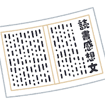

[対象者]1.小学生 [作成者]三浦 [問題種別]02.事例型
[番号]01_01_03_04_02_1_2_2 [分野]01.情報と社会 [分類]01.モラルと順法/03.不正行為/04.人工知能の不正利用
課題の読書感想文を書くのが面倒（めんどう）だったので、AIに作らせて提出（ていしゅつ）した

1.自分で創作（そうさく）することが求められています。他（ほか）のものを流用してはいけません。
2.「カンニング」と同等の不正行為（こうい）です。
3.個人的（こじんてき）な利用（私的（してき）使用）に当たるので、著作権（ちょさくけん）侵害（しんがい）にはなりません。
4.引用に当たるので、問題ありません。
1
2
3
4